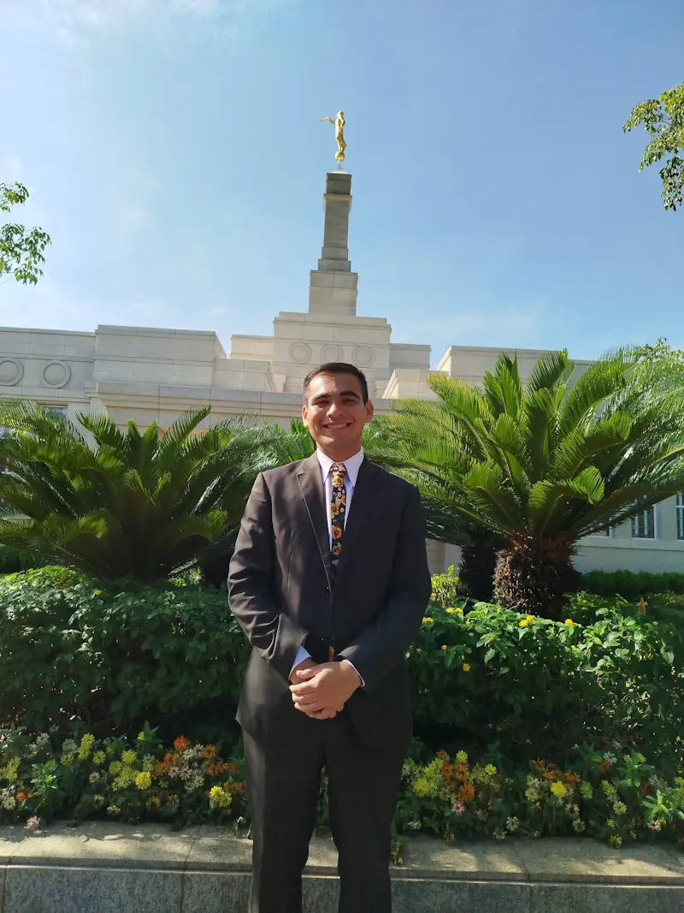

Pedro Martinez | WDD 130.

Hi, my name is Pedro Martinez, I am from Paraguay and I really love listening to
music,
to drink terere in a sunny day and spend meaningful time with my family.
I am 20 years old and I am passionate about computer science and programming languages
I love creating things that helps others to facilitate their lives.